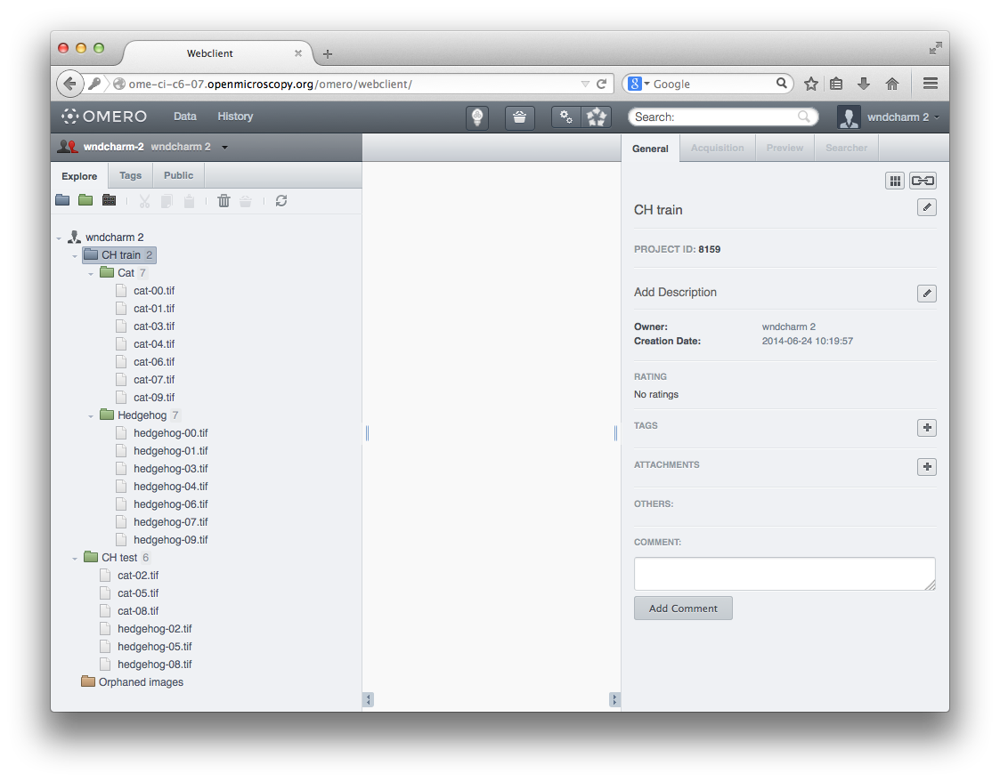
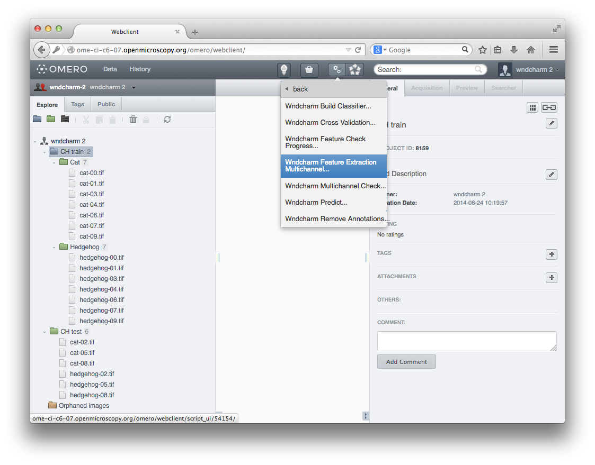
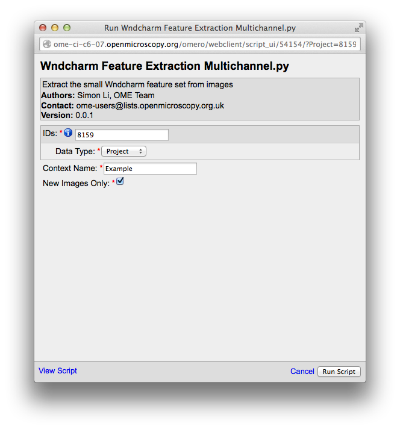
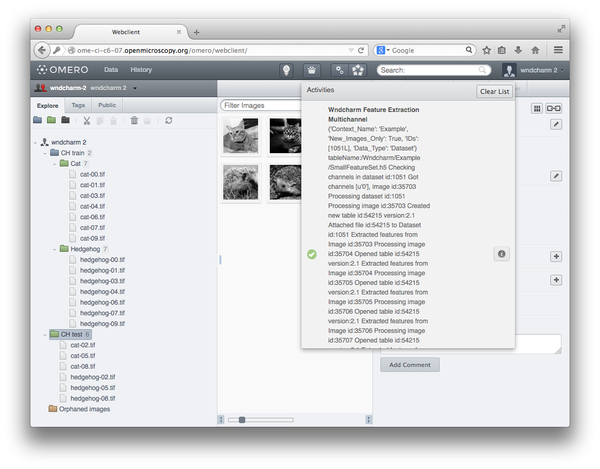
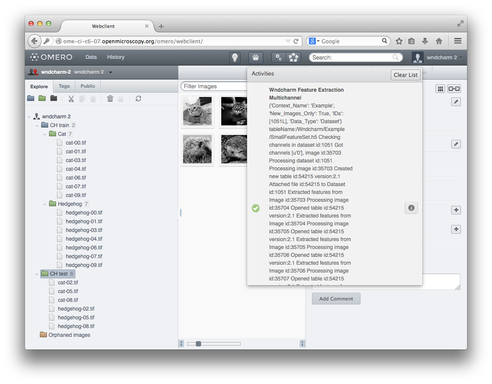
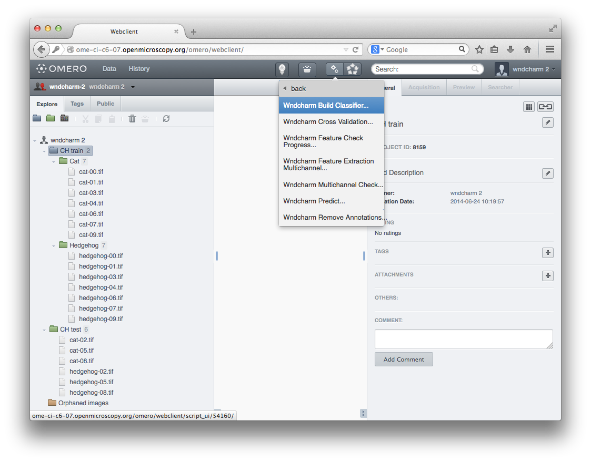
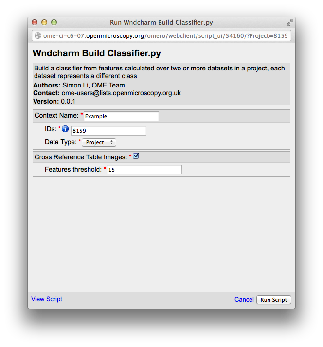
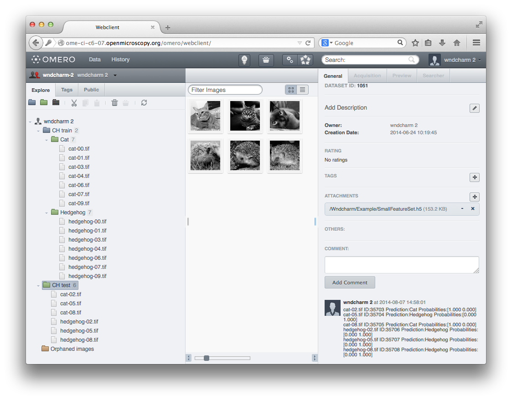
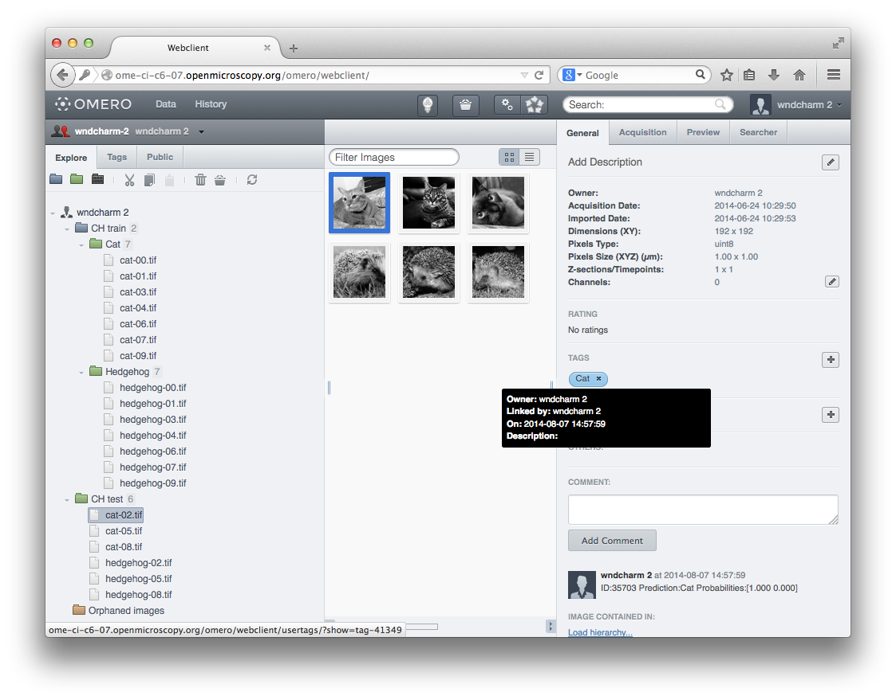
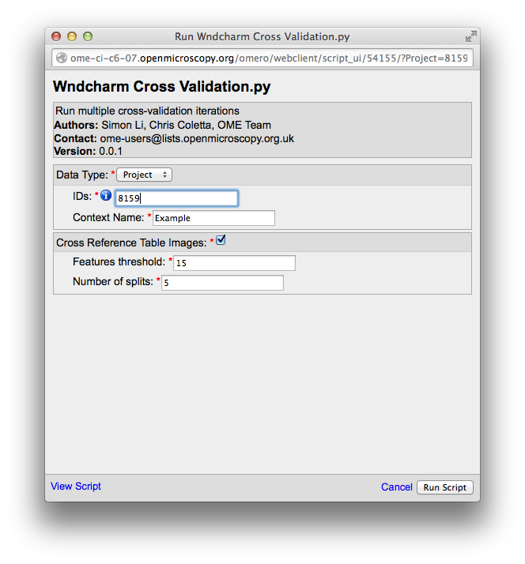

OMERO-wndcharm (beta)
OMERO-wndcharm is a small Python library and set of scripts for using WND-CHARM in OMERO.
WND-CHARM is a set of feature calculation and machine learning algorithms that is designed to work across a large variety of images.
At present OMERO-wndcharm should be considered beta quality. It is likely that the storage formats for features and schemas used for recording classification results and other metadata are likely to change.
Installation
See the README file.
Using OMERO-wndcharm
At present OMERO-wndcharm is limited to supervised classification, where all images have the same number of channels.
-
Create a Project to hold the training set of images, the classifier will be named after this project. Within this project create some datasets, one for each class. The names of the datasets will be used as class labels. You can also create a test dataset, outside of the training project.

-
Calculate some features for the training project. Select the project, and load the
Wndcharm Feature Extraction Multichannelscript. Accept the default parameters and clickRun Script. Do the same for the testing set.
-
Wait for the feature calculation to finish.
 
 -
Each dataset should have a file attachment, containing the calculated features.
-
Build the classifier. Select the training project, and load the
Wndcharm Build Classifierscript. Accept the default parameters and clickRun Script.
-
When the classifier has been built refresh the page and you should see three file attachments on the project. These hold the features, the feature weights and the class labels.
-
You can test the classifier by predicting the class of the test images. Select the testing dataset, and load the
Wndcharm Predictscript. You must fill in theTraining Project IDwith the ID of the project that the classifier is attached to. ClickRun Script.
-
When the prediction script has finished the test dataset will have a comment containing the predicted classes and marginal probabilities for all images in the dataset.

-
In addition each test image will be tagged with its predicted class.

-
All tags associated with the built classifier belong to a single tagset, visible from the Tags view.
-
Advanced users may want to try varying the training parameters, or to evaluate the classifier using cross-validation.
